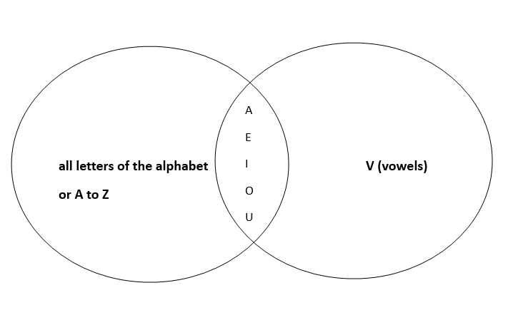
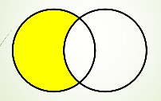
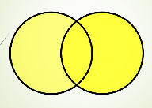

Set Definitions and Notation
A set is simply a collection of distinct items. Each item in the set is called an element. We write sets
using curly braces, like {a, b, c}. Here are some easy-to-understand examples:
F = {cat, dog, bird} - A set of pets.N = {1, 2, 3, 4, 5, 6} - A set of numbers from 1 to 6.C = {red, blue, green} - A set of colors.M = {apple, orange, banana, ...} - A set of fruits (can continue).
Two sets are equal if they contain exactly the same elements. For example:
{x, y, z} = {z, y, x} - Order doesn't matter in sets.{1, 1, 2, 3} = {1, 2, 3} - Duplicate elements are not counted more than once.
Set Builder Notation Examples:
V = { x | x is a vowel } - The set of vowels (a, e, i, o, u).E = { x | x is an even number between 1 and 10 } - The set {2, 4, 6, 8, 10}.O = { x | x is an odd number } - The set of all odd numbers.
Venn Diagram
Venn diagrams were developed by John Venn as a method of using diagrams to illustrate set theory. The
Universal
Set (U) contains all objects under consideration and is represented using a rectangle.
Inside the rectangle, circles or other geometric figures are used to represent sets. Sometimes, points are
used
to represent the particular elements of the set. Venn diagrams are often used to indicate the relationships
between sets.

Example: Draw a Venn diagram that represents V, the set of vowels in the English alphabet:

Another notation to describe membership in sets uses a ∈ A (element of) and a ∉ A
(not
an element of).
A set with no elements is called the empty set or null set, denoted by ∅ or {}. A
singleton set is a set with exactly one element, e.g., {∅}.
The set A is a subset of B if and only if every element of A is also
an
element of B. This can be expressed as:
A ⊆ B (A is a subset of B)B ⊇ A (B is a superset of A)A ⊂ B (A is a proper/strict subset of B)B ⊃ A (B is a proper/strict superset of A)
Let S be a set. If there are exactly n distinct elements in S, where
n is a nonnegative integer, we say that S is a finite set and n is
the
cardinality of S. The cardinality of a set is a measure of the number of elements of the set,
denoted by |S|. For example, |∅| = 0.
A set is said to be infinite if it is not finite. Infinite sets may be countable or uncountable.
Union Diagram

Intersection Diagram
Complement Diagram
Difference Diagram

Symmetric Difference Diagram
Problems on Set Diagram

Laws of Sets
Commutative Laws
A ⋃ B = B ⋃ A - Union is commutative.
A ⋂ B = B ⋂ A - Intersection is commutative.
Associative Laws
(A ⋃ B) ⋃ C = A ⋃ (B ⋃ C) - Union is associative.
(A ⋂ B) ⋂ C = A ⋂ (B ⋂ C) - Intersection is associative.
Distributive Laws
A ⋃ (B ⋂ C) = (A ⋃ B) ⋂ (A ⋃ C) - Union distributes over intersection.
A ⋂ (B ⋃ C) = (A ⋂ B) ⋃ (A ⋂ C) - Intersection distributes over union.
Identity Laws
A ⋃ ⌀ = A - Union with the empty set.
A ⋂ ᵔ = A - Intersection with the universal set.
Inverse Laws
A ⋃ AC = ᵔ - Union with its complement is the universal set.
A ⋂ AC = ⌀ - Intersection with its complement is the empty set.
Double Complement Law
(AC) C = A - The complement of the complement is the original set.
Idempotent Laws
A ⋃ A = A - Union with itself.
A ⋂ A = A - Intersection with itself.